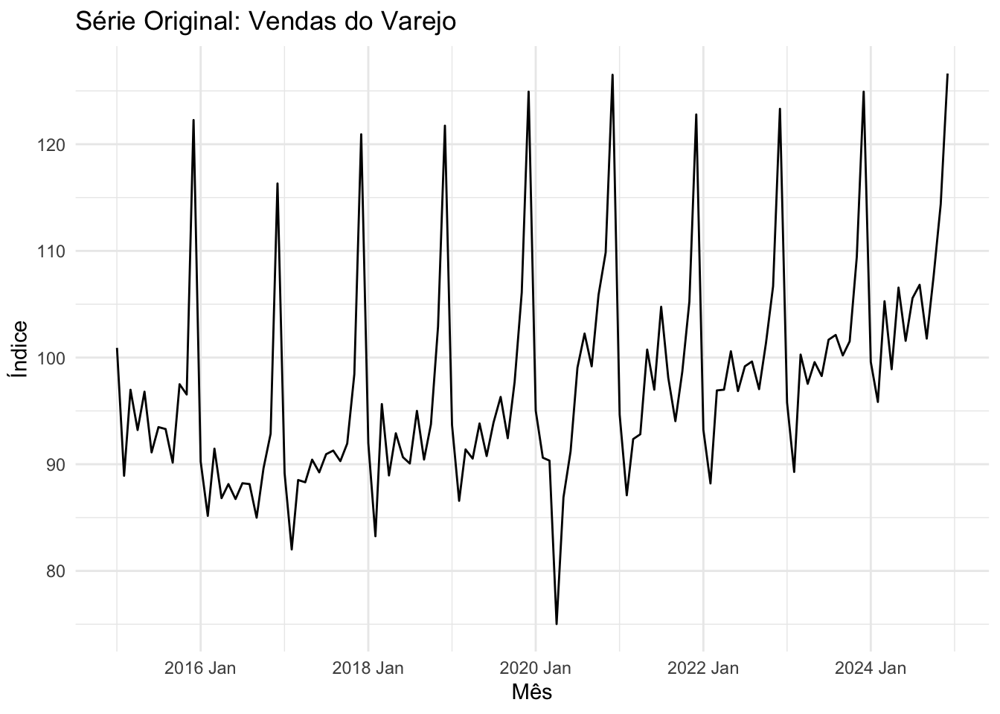
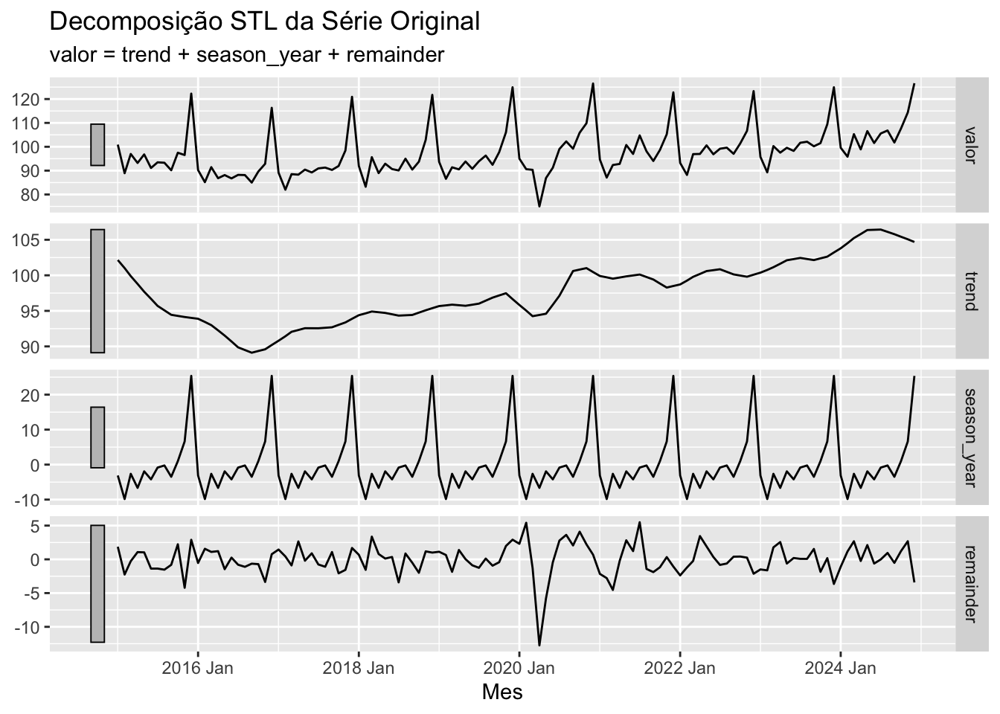
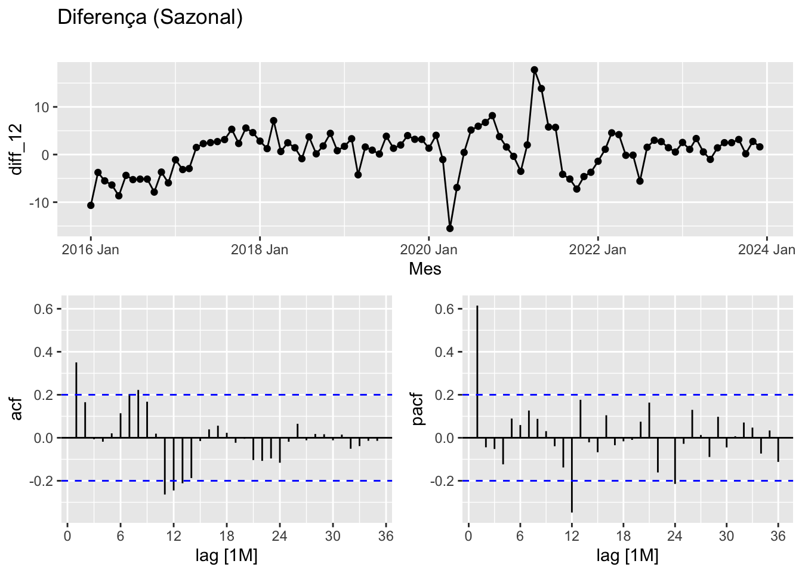
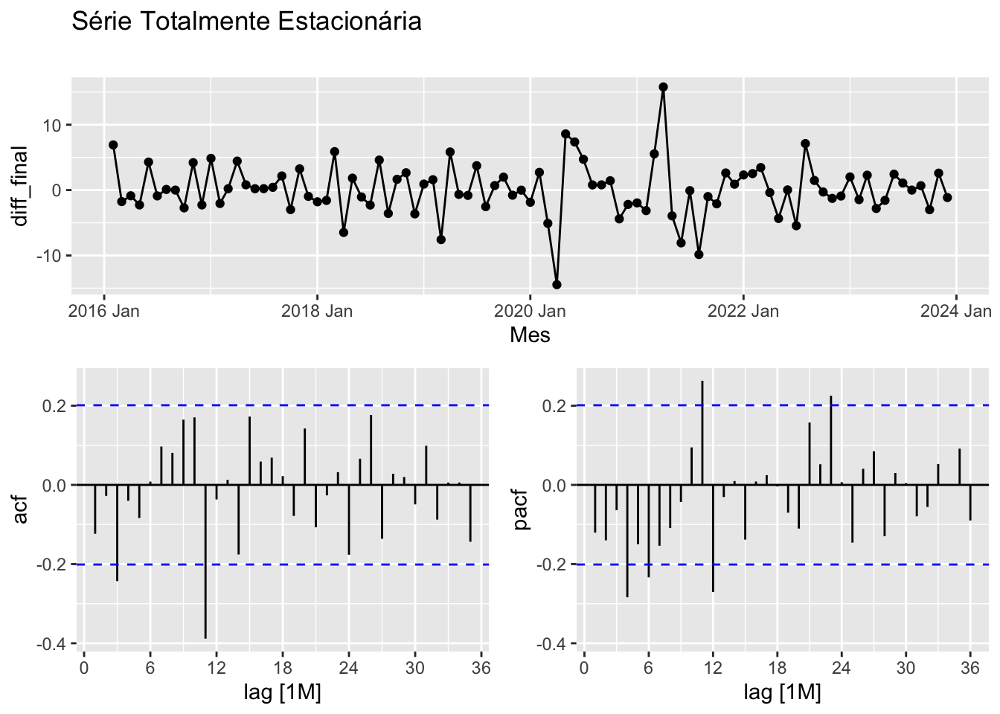
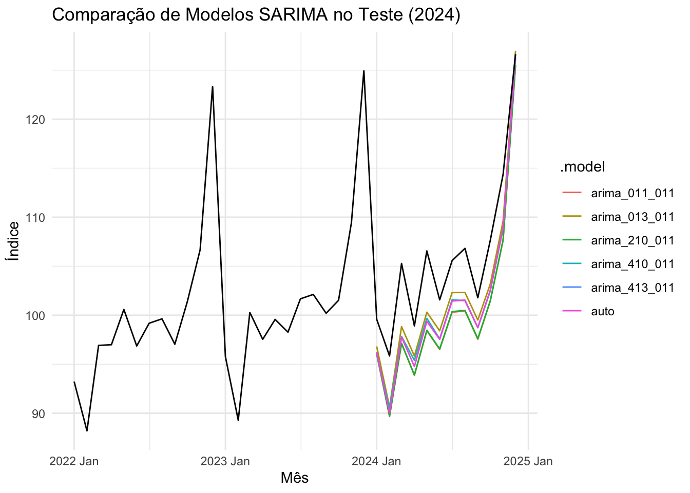
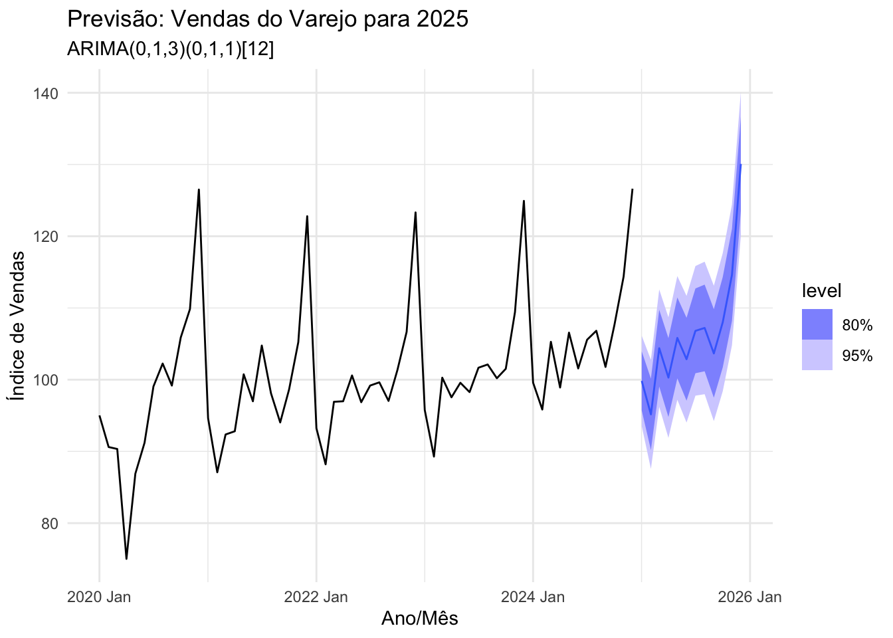

Análise de Séries Temporais com Modelo SARIMA
Índice de Vendas do Varejo
Introdução
O Índice de Vendas do Varejo (fornecido pelo Banco Central do Brasil) é um dos principais termômetros da economia real. Ele mede o pulso do consumo das famílias e dita o ritmo de produção da indústria.
Diferente de outras métricas econômicas, o varejo sofre oscilações violentas dentro de um mesmo ano. Estoques insuficientes em meses de pico (como a Black Friday e o Natal) causam perda de receita. Por outro lado, excesso de estoque em meses de vale (como janeiro e fevereiro) gera custo de armazenamento e capital imobilizado.
Ao utilizar a modelagem SARIMA para projetar as vendas futuras. Ao contrário de modelos mais simples, o SARIMA é capaz de isolar e aprender duas forças simultaneamente: a tendência macroeconômica de longo prazo e a sazonalidade rígida do calendário, permitindo decisões.
Análise Exploratória
Nesta etapa, importamos os dados brutos via API do Banco Central (Série Histórica: 2015 a 2024) para analisar o comportamento visual das vendas.
Comportamento da série
Ao observar o gráfico da série, notamos o padrão, estes picos anuais regulares confirmam a forte sazonalidade do varejo. Além disso, a altura desses picos varia ao longo dos anos, indicando a presença de uma Tendência.
Teste de estacionariedade na série original
| kpss_stat | kpss_pvalue |
|---|---|
| 1.273171 | 0.01 |
O Teste KPSS confirma que a série não é estacionária (p-valor < 0.05).
Decomposição da Série

A série apresenta tendência de alta no longo prazo e sazonalidade bem marcada, com poucos ruídos fora do padrão.
Separação treino e teste
Separamos toda a base histórica, de 2015 até dezembro de 2023, exclusivamente para o treinamento. Em seguida, isolamos o ano de 2024 inteiro como a base de teste.
1ª diferenciação (Sazonal)

Notamos que a primeira diferenciação torna a série mais próxima da estacionariedade, embora ainda seja possível observar uma leve tendência.
2ª diferenciação (Tendência) (Sazonal)

Com a segunda diferença aplicada, estabilizamos a média da série.
Na ACF, o terceiro lag se mostra forte, o que nos fez testar o MA(3). E aquele lag 12 testamos um MA(1) Sazonal.
Já na PACF, o 4º lag se mostra forte, o que nos fez testar a AR(4). E o lag 12 confirmou o ciclo sazonal, indicando um AR(1) Sazonal.
Teste KPSS
Aplicamos o teste KPSS para confirmar a estacionariedade da série.
| kpss_stat | kpss_pvalue |
|---|---|
| 0.0507577 | 0.1 |
Ajuste de modelos
Para realizar o ajuste preditivo, estruturamos os nossos modelos com parametrizações construídas com base na leitura visual da ACF (indicando Médias Móveis) e PACF (indicando Autorregressão).
Modelo automático
# A mable: 1 x 1
auto
<model>
1 <ARIMA(1,0,0)(0,1,1)[12] w/ drift>O modelo automático selecionado foi um ARIMA(1,0,0)(0,1,1)[12].
Desempenho dos modelos
A tabela de diagnóstico revela o comportamento dos modelos durante a fase de treinamento.
# A tibble: 5 × 8
.model sigma2 log_lik AIC AICc BIC ar_roots ma_roots
<chr> <dbl> <dbl> <dbl> <dbl> <dbl> <list> <list>
1 arima_011_011 11.0 -253. 512. 512. 519. <cpl [0]> <cpl [13]>
2 arima_210_011 11.2 -253. 513. 514. 523. <cpl [2]> <cpl [12]>
3 arima_410_011 11.0 -250. 512. 513. 527. <cpl [4]> <cpl [12]>
4 arima_013_011 10.7 -249. 509. 510. 522. <cpl [0]> <cpl [15]>
5 auto 9.94 -250. 507. 508. 517. <cpl [1]> <cpl [12]>Se observarmos, o menor AICc (508) é o modelo auto.
Em seguida, vamos gerar uma previsão do ano de 2024 com todos os modelos com a base teste para visualmente verificar qual modelo melhor se ajustou.
Análise Visual da Previsão (Ano de 2024)

Tabela de Acurácia
# A tibble: 6 × 3
.model RMSE MAPE
<chr> <dbl> <dbl>
1 arima_013_011 4.22 3.71
2 arima_410_011 4.86 4.32
3 auto 4.97 4.41
4 arima_210_011 5.78 5.23
5 arima_011_011 5.81 5.24
6 arima_413_011 NaN NaN A tabela de acurácia confirma o que a análise visual já indicava: o modelo com base na leitura da ACF, o ARIMA(0,1,3)(0,1,1)[12], foi o que melhor se ajustou.
Ele nos retornou o menor Erro Percentual (MAPE) de apenas 3,71% na previsão de todo o ano de 2024, superando significativamente o algoritmo automático (que obteve 4,40% de erro).
Previsão Final
Para encerrar, nós pegamos o nosso modelo que melhor se ajustou.

Notem como a previsão respeita perfeitamente o comportamento histórico do varejo.
Considerações Finais
Para concluir, este projeto provou na prática que o olhar clínico e a teoria ainda superam os algoritmos automáticos. Ao construirmos manualmente o nosso modelo SARIMA com base na leitura dos gráficos, nós cravamos um erro de apenas 3,7%, o menor de todo o teste. Essa precisão nos permitiu mapear a forte sazonalidade do varejo e gerar uma projeção para 2025. O grande valor final dessa entrega é dar ao mercado uma bússola: com essa curva projetada, qualquer gestor de varejo consegue saber o momento exato de frear as compras de estoque no início do ano e quando acelerar as contratações para a Black Friday e o Natal. É a verdadeira transição da gestão baseada em intuição para a gestão guiada por dados.